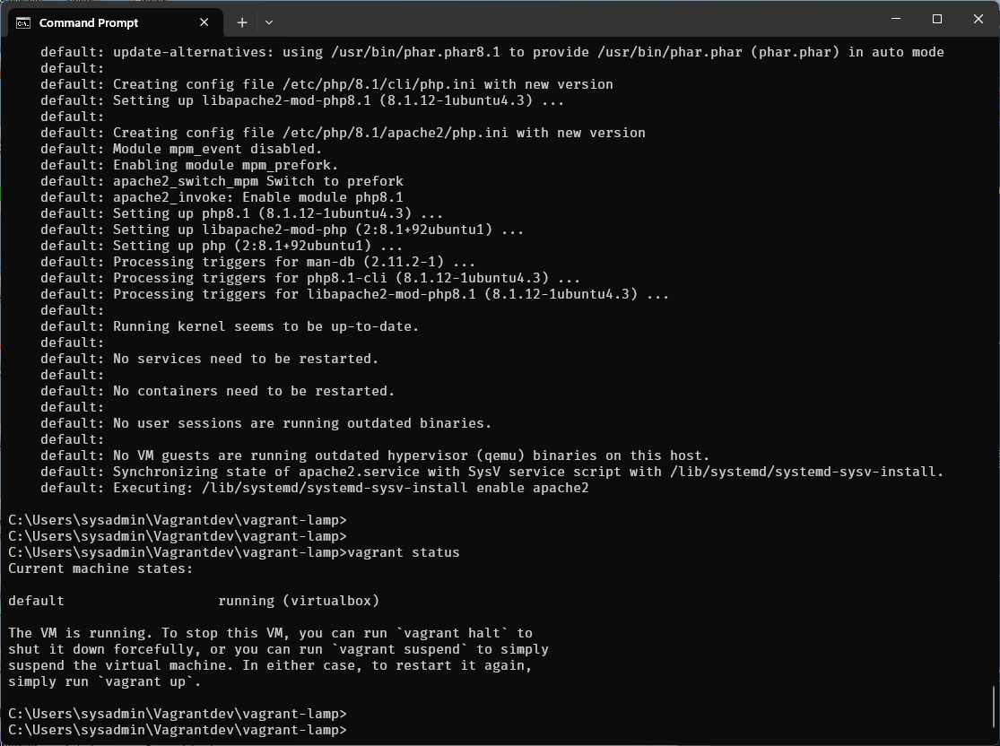
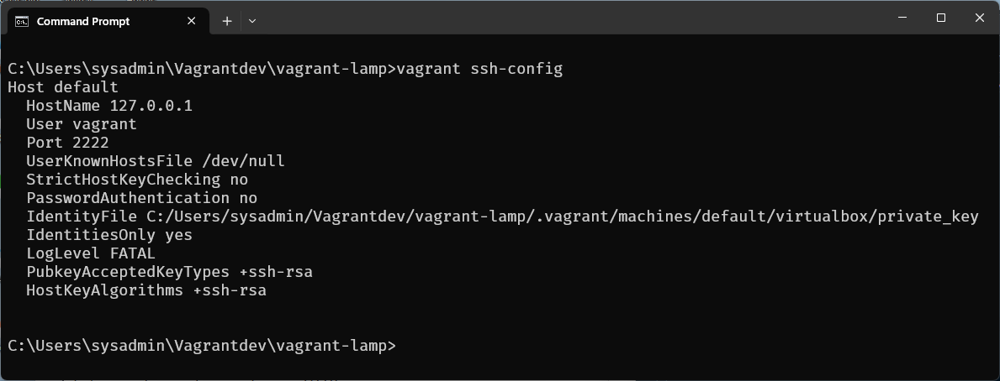
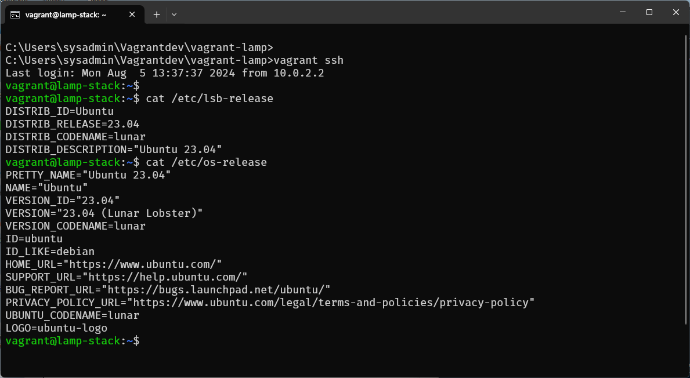
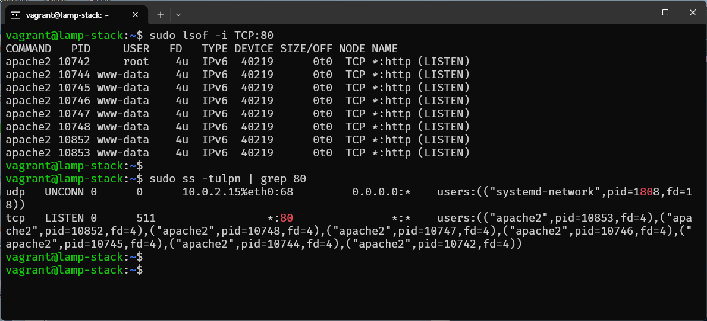
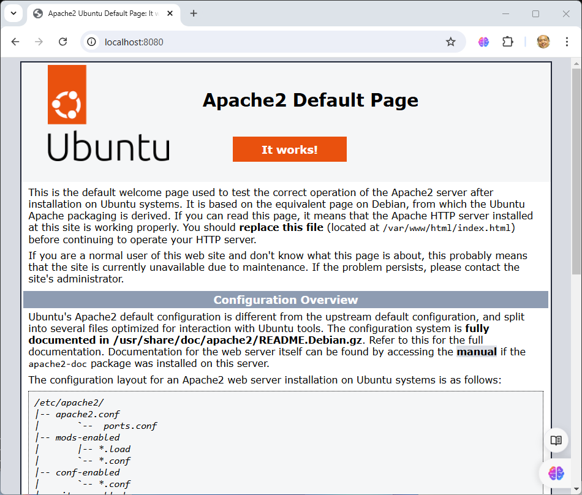
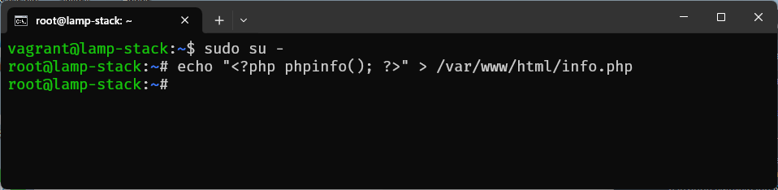
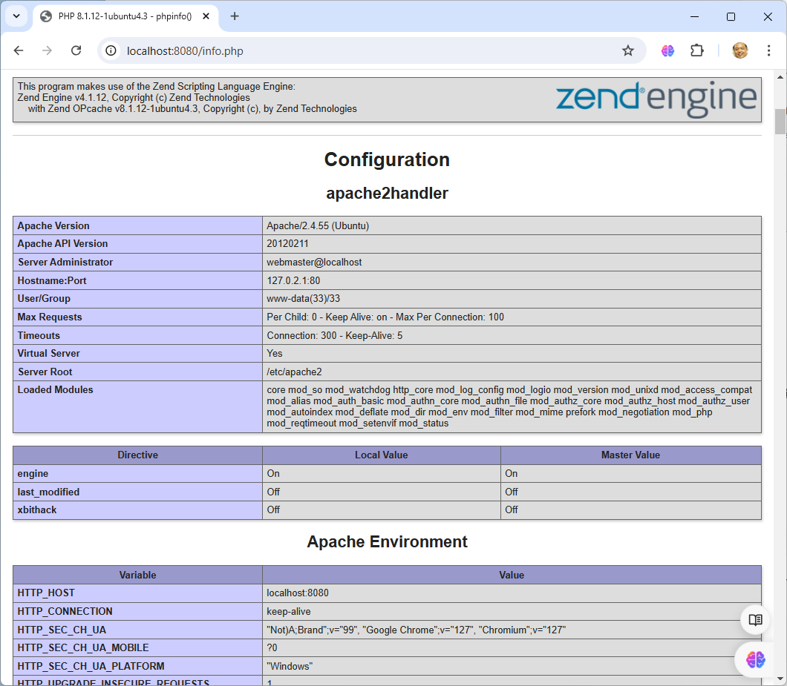
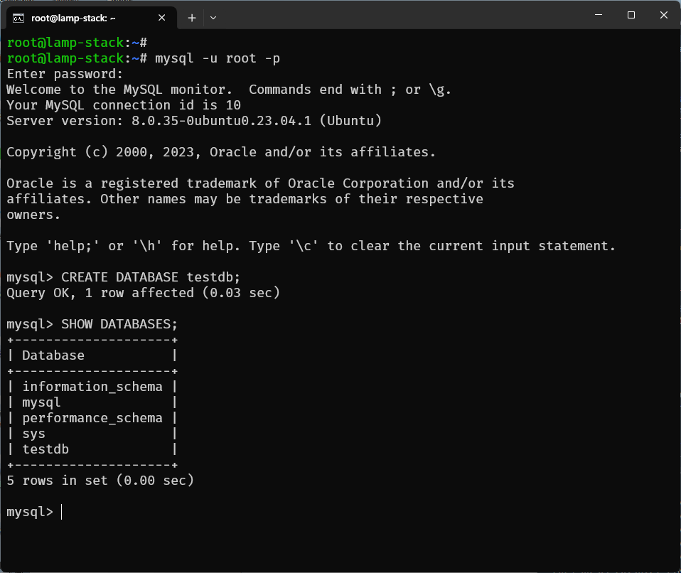

Vagrant Workshop: Single Node LAMP Stack
วัตถุประสงค์
เรียนรู้วิธีการสร้างและจัดการสภาพแวดล้อม LAMP (Linux, Apache, MySQL, PHP) บน VM(VM) โดยใช้ Vagrant
ขั้นตอนการสร้าง Single Node LAMP Stack ด้วย Vagrant
1. การตั้งค่าโปรเจค
- เปิดเทอร์มินัลหรือ PowerShell
- สร้างไดเรกทอรีใหม่สำหรับโปรเจค
mkdir vagrant-lamp cd vagrant-lamp - รันคำสั่ง
vagrant initเพื่อสร้างไฟล์Vagrantfilevagrant init generic/ubuntu2304
2. การกำหนดค่า Vagrantfile
เปิดไฟล์ Vagrantfile และแก้ไขดังนี้:
Vagrant.configure("2") do |config|
# เลือก box ที่จะใช้
config.vm.box = "generic/ubuntu2304"
# กำหนด hostname
config.vm.hostname = "lamp-stack"
# การตั้งค่าเครือข่าย
config.vm.network "private_network", ip: "192.168.33.10"
config.vm.network "forwarded_port", guest: 80, host: 8080
# การติดตั้ง Apache, MySQL, PHP
config.vm.provision "shell", inline: <<-SHELL
apt-get update
apt-get install -y apache2
apt-get install -y mysql-server
apt-get install -y php libapache2-mod-php php-mysql
systemctl enable apache2
systemctl start apache2
SHELL
end
3. การเริ่มต้น VM
รันคำสั่ง vagrant up เพื่อสร้างและเริ่มต้นเครื่องเสมือน
vagrant up --provider=virtualbox --provision

ตรวจสอบ ssh-config
vagrant ssh-config

รันคำสั่ง vagrant ssh เพื่อเชื่อมต่อกับเครื่องเสมือนผ่าน SSH
vagrant ssh

การใช้คำสั่ง lsof
The lsof command, in combination with other tools like top or ps, can be very helpful when diagnosing network issue.
$ sudo lsof -i TCP:22
คำอธิบายแต่ละ Colume:
- COMMAND: The command name
- PID: Process ID (PID) of the process
- USER: Owner of the process
- FD: File descriptor definition
- TYPE: Type of file descriptor
- DEVICE: Device number or, in the case of a block device, character or other
- SIZE/OFF: Dimension of the file or offset (the suffix
0tis the offset) - NODE: Node description of the local file; this could be the number of the local file, TCP, UDP, or STR (stream)
- NAME: The name of the mount point where the file resides
$ sudo lsof -i TCP:22

4. การทดสอบ Apache
เปิดเว็บเบราว์เซอร์และเข้าไปที่ http://localhost:8080 หากทุกอย่างถูกตั้งค่าอย่างถูกต้อง คุณควรเห็นหน้าเริ่มต้นของ Apache

5. การทดสอบ PHP
สร้างไฟล์ PHP เพื่อทดสอบการทำงานของ PHP
$ sudo su -
# echo "<?php phpinfo(); ?>" > /var/www/html/info.php

เปิดเว็บเบราว์เซอร์และเข้าไปที่ http://localhost:8080/info.php ควรเห็นหน้าแสดงข้อมูล PHP

6. การทดสอบ MySQL
เชื่อมต่อกับ MySQL โดยใช้คำสั่งต่อไปนี้: โดยให้เปลี่ยน เป็น user root ก่อน
$ sudo su -
# mysql -u root -p
ค่าเริ่มต้นจะเป็นค่าว่าง กด Enter เพื่อเข้าสู่ MySQL shell รันคำสั่งต่อไปนี้เพื่อสร้างฐานข้อมูลทดสอบ:
CREATE DATABASE testdb;
SHOW DATABASES;

7.การจัดการเครื่องเสมือน
ปิด VM
vagrant halt
ลบ VM
vagrant destroy
สรุป
การใช้ Vagrant สำหรับการตั้งค่า LAMP stack จะช่วยให้คุณสามารถสร้างสภาพแวดล้อมการพัฒนาที่สม่ำเสมอและสามารถทำซ้ำได้ง่ายดาย เมื่อคุณมี Vagrantfile คุณสามารถแบ่งปันไฟล์นี้กับทีมของคุณเพื่อให้ทุกคนสามารถใช้สภาพแวดล้อมการพัฒนาเดียวกันได้